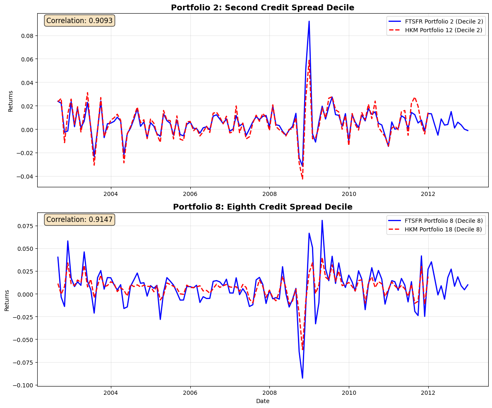
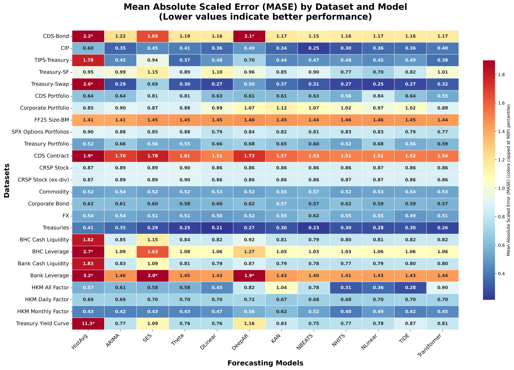
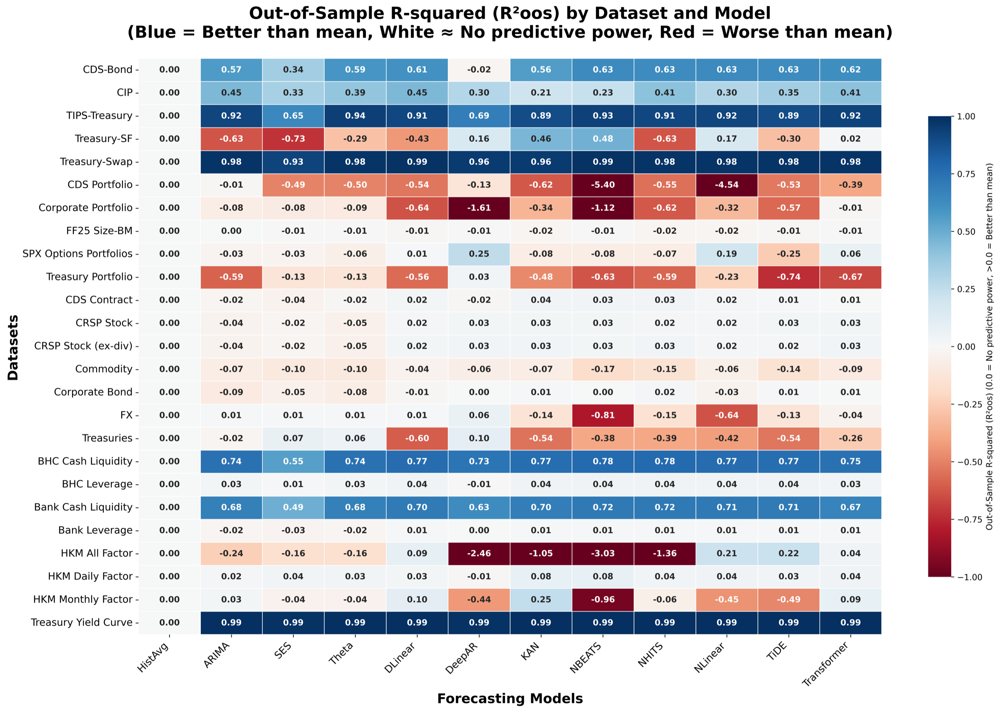

Financial Time Series Forecasting Repository (FTSFR)#
The Financial Time Series Forecasting Repository (FTSFR) is an open benchmark for comparing time series forecasting methods on financial data. It assembles 25 financial datasets, each cleaned the way the canonical paper for that market cleans it, and holds those data fixed while a dozen forecasting methods are run on them. It is also a working example of everything this course builds: dozens of data pulls from licensed and public sources, cleaning that must be documented and rerunnable, and many pipelines feeding one result.
The paper. Jeremiah Bejarano, Viren Desai, Kausthub Keshava, Arsh Kumar, Zixiao Wang, Vincent Hanyang Xu, and Yangge Xu, “An Open Benchmark for Evaluating Time Series Forecasting Methods across Financial Markets,” Office of Financial Research Working Paper 26-05, August 25, 2026. Paper page, PDF. The OFR blog post “Do Deep Learning Methods Improve Financial Forecasts?” (August 25, 2026) summarizes it. The six co-authors did most of this work as students in the Financial Mathematics program at the University of Chicago.
The code.
The research repository, with the forecasting runs and the paper: github.com/jmbejara/ftsfr, documented at jeremybejarano.com/ftsfr.
One ChartBook pipeline per data source: github.com/ftsfr.
Why a finance-specific benchmark#
No forecasting method wins everywhere. The M3 re-evaluation favored classical statistical models, the M4 competition was won by a hybrid of a neural network and exponential smoothing, and M5 was swept by machine learning. The No Free Lunch theorem says to expect this: no algorithm is best for every data generating process. So the only way to learn whether a new method improves financial forecasts is to test it on financial data.
General benchmarks such as the Monash Time Series Forecasting Repository and FRED-MD cover little of finance. And when new methods are tested on financial data, each study builds its own version of the data. Two papers that both use “TRACE corporate bonds” or “CRSP equities” can apply different filters, sample windows, and portfolio rules, so a comparison across them mixes the skill of the method with the choices made in cleaning. FTSFR fixes the data so that only the method varies.
What is in it#
Table 1 of the paper lists 25 datasets in three groups.
Returns (12): CDS contracts and CDS portfolios; commodity futures; corporate bonds and corporate bond portfolios; CRSP stocks, with and without dividends; the Fama-French 25 size and book-to-market portfolios; foreign exchange; SPX option portfolios; Treasury bonds and Treasury bond portfolios.
Basis spreads (5): CDS-bond, covered interest parity, TIPS-Treasury, Treasury spot-futures, and Treasury-swap. These are arbitrage spreads that widen when intermediaries are constrained, which is why the financial stability literature watches them.
Other financial data (8): bank and bank holding company cash liquidity and leverage from Call Reports (four datasets); the He, Kelly, and Manela intermediary factors, daily, monthly, and the full factor file (three); and the Treasury zero-coupon yield curve.
Each dataset follows a named paper (Fama and French for equities, Gürkaynak, Sack, and Wright for Treasuries, Constantinides, Jackwerth, and Savov for options, Dickerson, Robotti, and Rossetti for corporate bonds, Siriwardane, Sunderam, and Wallen for the basis spreads, and so on), and each replication is checked against published figures or summary statistics from that paper.

One such check: the FTSFR corporate bond portfolio returns against the series He, Kelly, and Manela (2017) published.
Code, not data#
Most of these data are licensed (CRSP, Compustat, OptionMetrics, S&P Global CDS, Bloomberg) and cannot be redistributed. So FTSFR publishes the pipeline that downloads, cleans, and formats each series instead of the series themselves. Anyone with the same subscriptions can rebuild every dataset. This is the same rule you follow in this course: share the code and derived results, never the raw licensed data.
How the forecasts are evaluated#
Twelve methods. The Historical Average benchmark; classical statistical
models (ARIMA, simple exponential smoothing, Theta); hybrid linear models
(DLinear, NLinear); and deep learning models (DeepAR, N-BEATS, N-HiTS, a
vanilla Transformer, TiDE, and KAN). The paper runs them through Nixtla’s
statsforecast and neuralforecast packages, with the neural models’ automatic
hyperparameter search. The aim is reasonable baselines, not each model’s best
possible tuning.
Univariate, with no exogenous regressors. Every method forecasts each series from its own history. The models are global, meaning one model is trained across all the series in a panel, but no series sees another’s values and no macro covariates enter. Every conclusion below holds within that class of models; adding covariates or multivariate models is left to future work.
Rolling-origin cross-validation. Each model forecasts one horizon ahead (a month for monthly data, a quarter for quarterly, about a calendar month for daily), the origin then rolls forward by one horizon, and the forecast is repeated, for up to six windows. Every model sees the same windows and the same filtered panel.
Two metrics.
MASE (mean absolute scaled error) divides the forecast’s mean absolute error by that of a naive forecast on the training window. Below 1 beats the naive forecast.
Out-of-sample \(R^2\), pooled across every series and test date in a dataset, compares squared errors with those of each series’ own training mean:
\[ R^2_{\text{oos}} = 1 - \frac{\sum_{s}\sum_{t} (y_{s,t}-\hat y_{s,t})^2}{\sum_{s}\sum_{t} (y_{s,t}-\bar{y}_{\text{train},s})^2}. \]Positive means the model beats the historical average. This is the standard measure in the return-predictability literature.
What the paper finds#
Asset returns stay close to unforecastable. Across equities, corporate bonds, Treasuries, FX, options, and CDS, every method’s out-of-sample \(R^2\) sits near zero, the deep models included. Within this class of models, the historical average is about as good as it gets, which matches decades of asset pricing evidence.
Basis spreads are where the newer models earn their keep. NLinear, N-BEATS, TiDE, and N-HiTS post median out-of-sample \(R^2\) of about 0.63, ahead of Theta (0.59) and ARIMA (0.57). The spreads have seasonal quarter-end funding patterns that the global deep and hybrid models pick up.
On bank and intermediary indicators the families are close. The hybrid linear models hold a modest edge in out-of-sample \(R^2\) (medians of 0.10 to 0.16 for KAN, TiDE, NLinear, and DLinear, against 0.03 for Theta and ARIMA), and the classical methods stay competitive and remain a reasonable default.
The best forecaster depends on the task.

Mean absolute scaled error by dataset and method; lower is better. The first column, the historical average, is the benchmark the others are measured against.

Out-of-sample \(R^2\) against each series’ training mean. The returns rows sit near zero for every method.
Cleaning changes the leaderboard#
Section 6 of the paper tests the premise behind the whole project: that which method looks best depends on how the data were cleaned. Each experiment holds the data source, the universe, and the realized returns fixed and changes one cleaning choice.
The TRACE case study. Bid-ask averaged TRACE prices carry market microstructure noise, and Dickerson, Robotti, and Rossetti propose a correction. The paper builds two panels of ten credit-spread decile portfolios, one sorted on the noisy signal and one on the corrected signal. The two signals have a rank correlation of 0.98, and the portfolio returns are 98 to 99 percent correlated within each decile. Yet the long-short spread doubles, from 2.8 percent a year under the noisy signal to 5.6 percent under the corrected one. Run the twelve models on both panels and the classical baselines barely move (their out-of-sample \(R^2\) changes by at most 0.005), while three deep models swing by an order of magnitude more: N-HiTS goes from \(-0.32\) to \(+0.01\), NLinear from \(-0.14\) to \(+0.15\), and KAN from \(+0.11\) to \(-0.17\). Some architectures gain from the cleaner data and some lose.
Three more contrasts show the same pattern:
SPX options: the full three-level filter stack of Constantinides, Jackwerth, and Savov against the first level only. MASE rises for every model under the full filters, the best model by MASE changes from DLinear to TiDE, and three models cross zero \(R^2_{\text{oos}}\).
Fama-French 25: NYSE breakpoints (the canonical choice) against all-CRSP breakpoints. Every \(R^2_{\text{oos}}\) is negative on both, but deep models swing by up to 0.31 while the classical models move by at most 0.10.
Treasury portfolios: the Gürkaynak, Sack, and Wright filters (no callable bonds, no on-the-run or first off-the-run issues) against a permissive universe. The two are more than 99 percent correlated, yet the top model changes from the Transformer to N-BEATS, and four models cross zero \(R^2_{\text{oos}}\).
The lesson for this course: a forecasting comparison means something only when the data are held fixed, and holding data fixed across studies takes a cleaning pipeline that anyone can read and rerun.
The codebase#
The research repository splits its doit work across several task files, one
per stage, so that each stage can run where its inputs are:
File |
Stage |
|---|---|
|
Bloomberg pulls, run only on a machine with a Terminal |
|
All other pulls, formatting, and documentation; |
|
Generates the forecasting jobs and runs them; for the paper they ran on a SLURM cluster |
|
The alternate-cleaning panels and tables of Section 6 |
|
Assembles the results and compiles the paper |
Run a stage with doit -f dodo_02_forecasting.py. Which subscriptions a
machine has is a setting (subscriptions.toml), so a pull that needs one a
machine lacks is not run.
The ftsfr organization takes the data side further.
Each data source is its own small repository and ChartBook pipeline
(fed_yield_curve, crsp_treasury, cds_returns, options, and so on), with
its own dodo.py, its own notebooks, and its datasets declared in
chartbook.toml. Each pipeline can be built, tested, and snapshotted alone,
and a catalog site shows every snapshot in a store together. That
split is what the ChartBook chapter describes.
Discussion
Open the research repository and read dodo.py and dodo_01_pull.py: how is
the work divided into tasks, and what does each task depend on? Then open one
of the small pipelines, for example
ftsfr/fed_yield_curve, and compare
its dodo.py and chartbook.toml. What does the split into one repository per
source buy, and what does it cost? Which of the cleaning choices in Section 6
would you want to see recorded in a pipeline’s documentation?
FTSFR and HW 4#
Several of these pipelines (the Fed yield curve, the Ken French portfolios, the He, Kelly, and Manela factors, corporate bond returns, and option portfolio returns) have snapshots in the class store. They are upstreams of the class report: in HW 4 your contribution depends on one of them by name, pins it, and builds on it, as the ChartBook chapter describes.